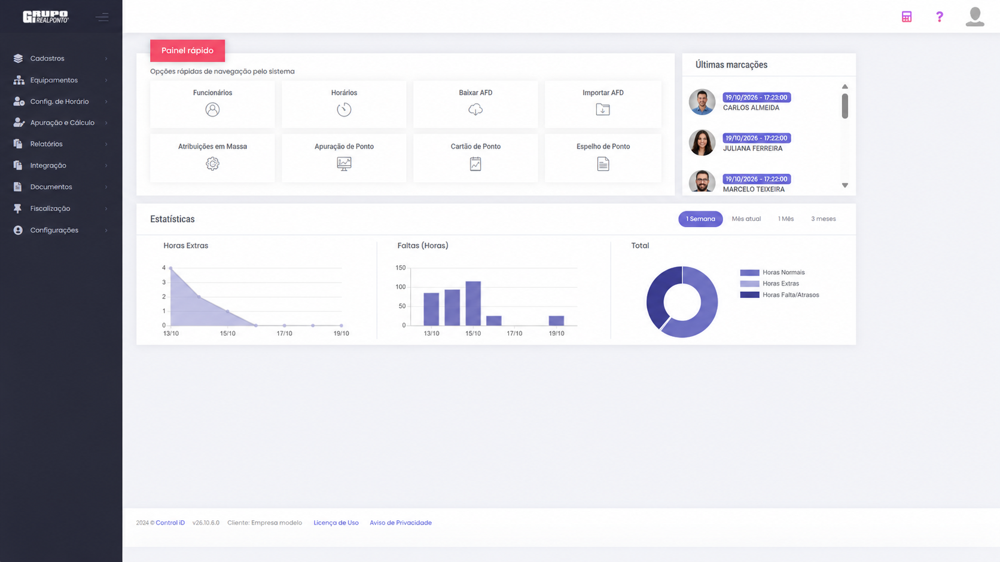
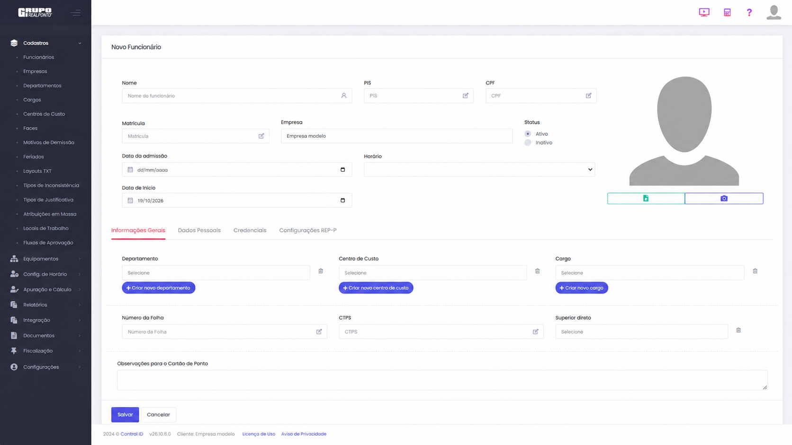
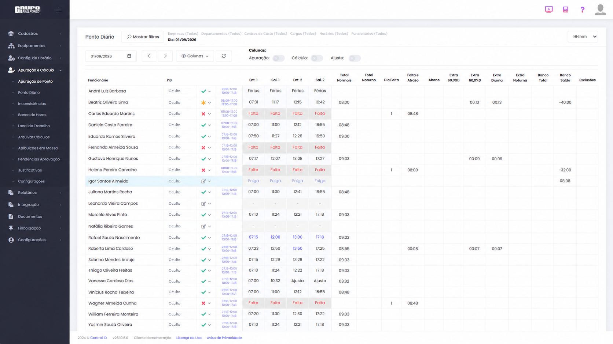
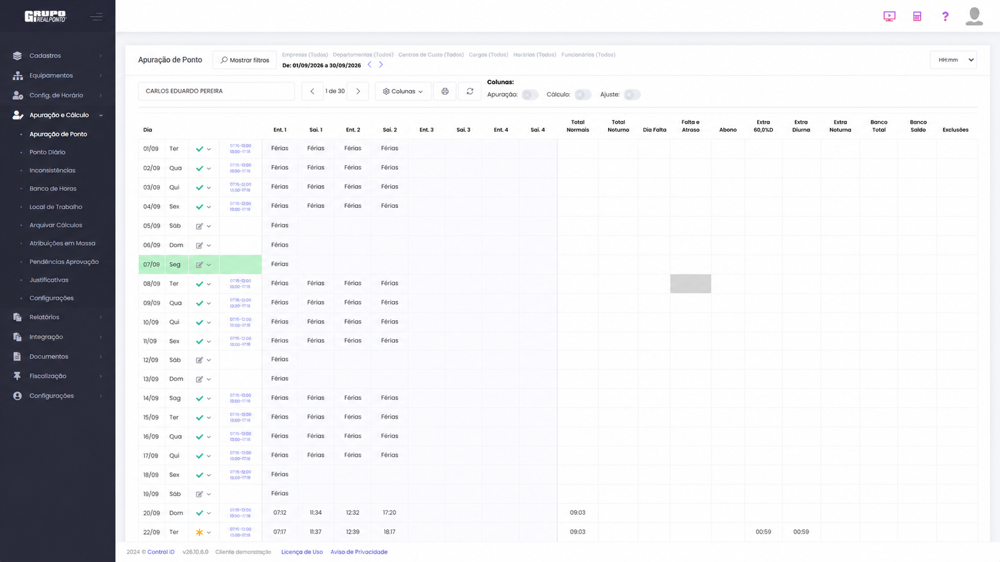

Cadastros organizados
Identificação, empresa, horário e vínculos internos reunidos no cadastro do colaborador.
Ver cadastroConheça o sistema da Control iD com a RealPonto. Explore o painel, os cadastros e a consulta das marcações em uma demonstração visual, sem precisar de login.
4 telas para conhecer 6 etapas no tour Sem cadastro
Escolha uma tela e descubra os pontos destacados. Ou siga um percurso curto pelas principais rotinas apresentadas.
Veja os atalhos do painel, as últimas marcações e os gráficos de acompanhamento.

Acesse rotinas como funcionários, apuração, cartão e espelho de ponto pelos atalhos reunidos no painel inicial.
Consulte as marcações apresentadas no painel, com identificação do colaborador e horário do registro.
Visualize os gráficos de horas extras, faltas e totais. Use os períodos disponíveis para mudar a visão do painel.
Conheça os campos de identificação e os vínculos que organizam o cadastro do funcionário.

A tela reúne nome, matrícula e campos de identificação do funcionário. Nesta demonstração, os dados pessoais não são utilizados.
Veja onde ficam o vínculo com a empresa, o horário e o status do cadastro, além das datas disponíveis no formulário.
Departamento, centro de custo e cargo ajudam a organizar o cadastro. A tela também apresenta campos de folha e superior direto.
Uma visão com colaboradores, marcações e ocorrências para a data selecionada.

Selecione o dia e use os filtros disponíveis para direcionar a consulta. Os botões desta captura fazem parte da demonstração visual.
Veja entradas e saídas de diferentes colaboradores na mesma tabela, ao lado das indicações de férias, faltas ou folgas.
Acompanhe as colunas de horas, faltas, extras e banco de horas apresentadas na consulta diária.
Veja como a tela reúne os dias, as marcações e as colunas de apuração em uma única consulta.

Escolha o colaborador e o intervalo de consulta. A navegação permite percorrer os cadastros apresentados nesta tela.
Consulte os registros e as ocorrências de cada dia do período. A tabela mantém as entradas e saídas organizadas em colunas.
Veja as colunas de totais, extras e banco de horas ao lado das marcações. As informações dependem da configuração utilizada no sistema.
Converse com a RealPonto para entender a aplicação do RHiD na sua empresa.
Esta é uma apresentação de telas, não um ambiente de teste. Os nomes são ilustrativos e os identificadores foram ocultados. Não há login, gravação de alterações ou conexão com dados de clientes. A interface e os recursos podem variar conforme a versão e a contratação.
Use os exemplos da apresentação para entender onde encontrar as informações de cada etapa.
Identificação, empresa, horário e vínculos internos reunidos no cadastro do colaborador.
Ver cadastroConsulte as marcações e ocorrências da equipe para uma data específica.
Ver ponto diárioAcompanhe a apuração de um colaborador ao longo dos dias selecionados.
Ver apuraçãoConverse sobre a configuração, a orientação de uso e o suporte previstos para a sua contratação. Nossa equipe ajuda a avaliar a solução para a sua necessidade.
Conheça o suporte RealPontoQuantidade de colaboradores, locais de trabalho e equipamentos utilizados.
Defina com a equipe as configurações e orientações necessárias.
Confirme o escopo de suporte e as condições da proposta.
Uma forma de conhecer o RHiD antes de escolher a solução para sua empresa.
Não. A apresentação é pública e não solicita senha, cadastro ou acesso a uma conta do RHiD.
Não nesta página. Os cliques apenas navegam entre as telas e suas explicações. Não existe gravação de dados nem acesso ao sistema real.
Não. Esta primeira apresentação mostra o painel, o cadastro de colaboradores, o ponto diário e a apuração. Confirme os demais recursos e as condições da versão com a equipe RealPonto.
Use o botão de contato desta página e informe a quantidade de colaboradores, os locais de trabalho e os relógios utilizados. A equipe poderá orientar os próximos passos.
Fale com a RealPonto sobre o RHiD e tire suas dúvidas antes de contratar.
RHiD é um sistema da Control iD. Demonstração visual preparada para o site da RealPonto.